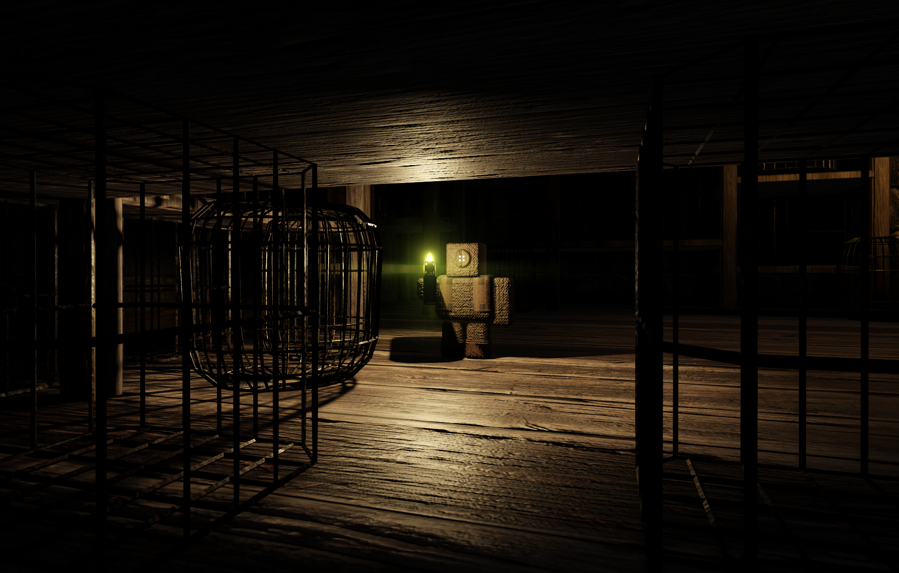
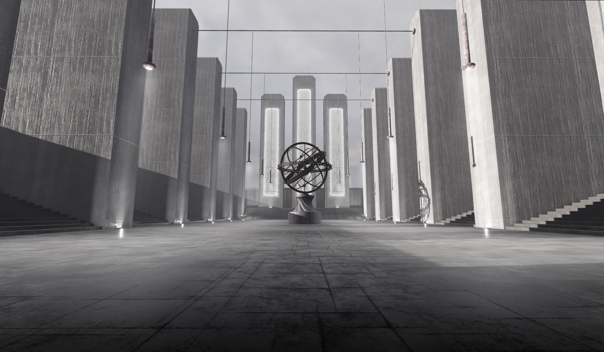
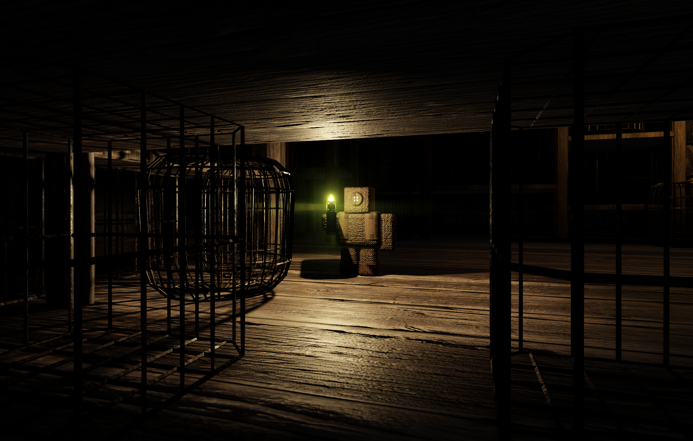
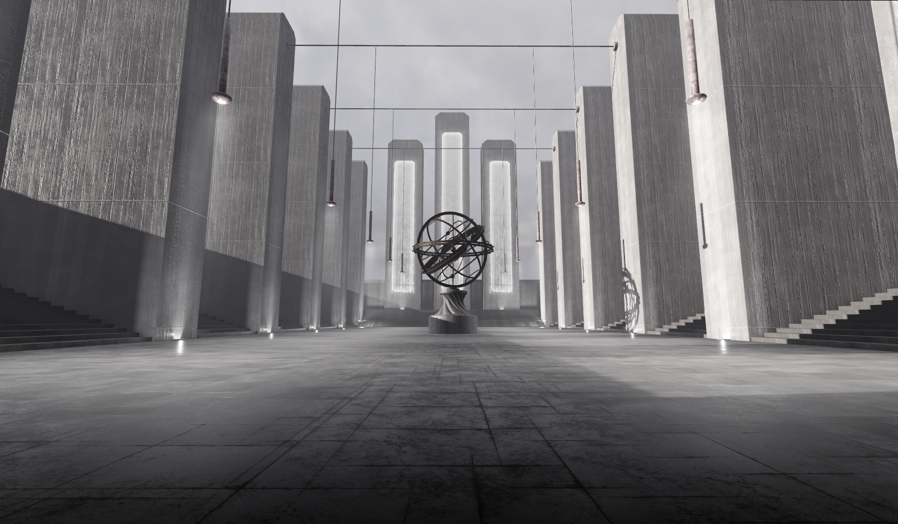

Fynch Interactive
We craft polished, social-first games designed to bring players together — built with care, creativity, and community at the core.
We craft polished, social-first games designed to bring players together — built with care, creativity, and community at the core.
 



Join the Fynch community and experience Fynch Interactive for yourself. Our latest game is live on Roblox and ready to play.
Play on RobloxOur games are thoughtfully designed, visually refined, and rigorously tested to feel smooth, intentional, and fun.
We believe games are better together. Every experience we create encourages connection and friendly competition.
Player feedback shapes our worlds. We actively listen, iterate, and grow alongside the communities. <3